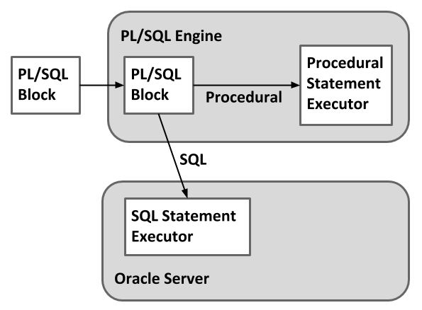

PL/SQL stands for procedural language; structured query language is known to be a block structured language. This was developed by Oracle corporation in the year 1980s. It is the Oracle corporation’s extension for SQL and also the relational database. This is also available in Oracle Database since version 7 which stores procedures, functions, packages, triggers. Times Ten in-memory database since the version 11.2.1 and also IBM DB 2 since the version 9.7. it is said that the Oracle corporation usually uses PL/SQL functionality with the different successive releases of each oracle database.
The PL/SQL language also includes procedural language elements like conditions and loops. PL/SQL allows declarations of constants and also variables of those types and also triggers. It can handle exceptions that are run time errors.

Advantages of PL/SQL
The major advantages of PL/SQL are discussed below :
Support For Sql : PL/SQL allows the use of all sql command, as well as all the sql functions, operations and data types. So, you can manipluate ORACLE data flexible and safely.
Block structure : PL/SQL is a block-structured language .Each program written in PL/SQL is written as a block. Blocks can also be nested. Each block is meant for a particular task. PL/SQL blocks can be stored in the database and resused.
Better performance : Without PL/SQL, Oracle server processes sql statements one at a time. Each sql result statement in another call to oracle server, which will increase netwrok traffic heavily. However, with PL/SQL, an entrie block can be sent to oracle server at a time. This will reduce communication between application and oracle server and ultimately it improves the performance.
Integration : As PL/SQL is the product of oracle corporation. So, it integrates well with sql *plus and other application development products of oracle. It bridges the gap between convenient access to database technology and the need for procedural programming capabilities.
Protability : Application written in PL/SQL are portable to any platfrom on which oracle runs. Once you write a program in PL/SQL, it can be used in any environment without any change at all.
Error Handling : PL/SQL handle error or exceptions effectively during, the exceution of a PL/SQL program. Once an exception is caught, specific action can be taken depending upon the type of the exception or it can be displayed to the user with a message.